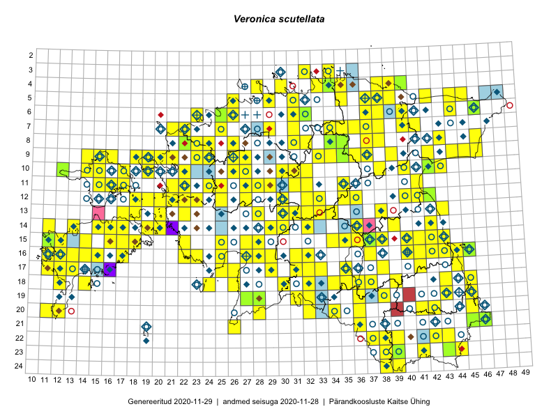

Veronica scutellata
Uuendatud: 2016-12-07
Kaardile koondatud taksonid: Veronica scutellata L.

Kaart põhineb 178 kirjel, neist vaatlusi 174 ja eksemplare 4. Taksonit on leitud 151 ruudust.
| Ruut | Vaatleja(d) | Vaatlusaeg | Kirje tüüp | Viide andmebaasikirjele |
|---|---|---|---|---|
| Malle Leht | 2015-07-09 | ruut/ala | vaata PlutoFis | |
| 14-15 | Toomas Kukk, Eerik Leibak | 2015-08-09 | ruut/ala | vaata PlutoFis |
| 10-17 | Toomas Kukk, Eerik Leibak | 2015-08-12 | ruut/ala | vaata PlutoFis |
| 09-14 | Toomas Kukk, Eerik Leibak | 2015-08-10 | ruut/ala | vaata PlutoFis |
| 05-45 | Tiit Hallikma, Toomas Kukk | 2015-07-21 | ruut/ala | vaata PlutoFis |
| 14-42 | Peedu Saar, Ott Luuk | 2015-06-21 | ruut/ala | vaata PlutoFis |
| 11-35 | Ott Luuk, Peedu Saar | 2015-07-27 | ruut/ala | vaata PlutoFis |
| 16-41 | Peedu Saar, Eerik Leibak | 2015-07-30 | ruut/ala | vaata PlutoFis |
| 09-15 | Toomas Kukk, Eerik Leibak | 2015-08-11 | ruut/ala | vaata PlutoFis |
| 09-16 | Toomas Kukk, Eerik Leibak | 2015-08-11 | ruut/ala | vaata PlutoFis |
| 06-44 | Peedu Saar, Liina Oja | 2015-07-21 | ruut/ala | vaata PlutoFis |
| 09-45 | Peedu Saar, Liina Oja | 2015-07-24 | ruut/ala | vaata PlutoFis |
| 11-31 | Ott Luuk, Toivo Sepp | 2015-07-12 | ruut/ala | vaata PlutoFis |
| 07-41 | Tiit Hallikma, Toomas Kukk | 2015-07-23 | ruut/ala | vaata PlutoFis |
| 12-21 | Tiit Hallikma, Toomas Kukk | 2015-08-27 | ruut/ala | vaata PlutoFis |
| 05-37 | Rein Kalamees, Kersti Püssa | 2015-08-15 | ruut/ala | vaata PlutoFis |
| 11-41 | Peedu Saar | 2015-08-22 | ruut/ala | vaata PlutoFis |
| 09-44 | Ott Luuk, Hannes Pehlak | 2015-07-24 | ruut/ala | vaata PlutoFis |
| 08-43 | Thea Kull, Eerik Leibak | 2016-07-24 | ruut/ala | vaata PlutoFis |
| 17-41 | Thea Kull, Peedu Saar | 2015-06-19 | ruut/ala | vaata PlutoFis |
| 17-31 | Ott Luuk, Hannes Pehlak | 2015-06-11 | ruut/ala | vaata PlutoFis |
| 13-20 | Meeli Mesipuu | 2015-07-13 | ruut/ala | vaata PlutoFis |
| 05-42 | Thea Kull, Eerik Leibak | 2015-07-22 | ruut/ala | vaata PlutoFis |
| 08-46 | Meeli Mesipuu, Timo Luhamäe | 2015-07-21 | ruut/ala | vaata PlutoFis |
| 16-25 | Indrek Tammekänd | 2015-09-18 | ruut/ala | vaata PlutoFis |
| 16-42 | Peedu Saar | 2015-08-21 | ruut/ala | vaata PlutoFis |
| 08-34 | Jana-Maria Habicht, Ester Valdvee | 2015-05-30 | ruut/ala | vaata PlutoFis |
| 08-34 | Jana-Maria Habicht, Ester Valdvee | 2015-07-31 | ruut/ala | vaata PlutoFis |
| 08-35 | Jana-Maria Habicht, Ester Valdvee, Kirke Pilvik | 2015-07-14 | ruut/ala | vaata PlutoFis |
| 09-35 | Jana-Maria Habicht, Ester Valdvee, Kirke Pilvik, Anu Nurk | 2015-07-30 | ruut/ala | vaata PlutoFis |
| 09-36 | Jana-Maria Habicht, Ester Valdvee | 2015-08-15 | ruut/ala | vaata PlutoFis |
| 11-29 | Ott Luuk, Toivo Sepp | 2015-08-20 | ruut/ala | vaata PlutoFis |
| 11-32 | Ott Luuk, Toivo Sepp | 2015-08-18 | ruut/ala | vaata PlutoFis |
| 14-32 | Maria Abakumova, Helle Mäemets | 2015-07-01 | ruut/ala | vaata PlutoFis |
| 15-34 | Maria Abakumova, Helle Mäemets | 2015-07-30 | ruut/ala | vaata PlutoFis |
| 16-13 | Mari Reitalu | 2015-08-29 | ruut/ala | vaata PlutoFis |
| 16-25 | Maret Gerz, Leena Gerz | 2015-08-09 | ruut/ala | vaata PlutoFis |
| 15-11 | Mari Reitalu | 2014-05-18 | ruut/ala | vaata PlutoFis |
| 20-11 | Mari Reitalu, Triin Reitalu | 2014-08-15 | ruut/ala | vaata PlutoFis |
| 17-32 | Maria Abakumova, Tiit Hallikma | 2015-07-09 | ruut/ala | vaata PlutoFis |
| 17-12 | Mari Reitalu | 2014-09-02 | ruut/ala | vaata PlutoFis |
| 17-33 | Maria Abakumova | 2015-06-22 | ruut/ala | vaata PlutoFis |
| 18-32 | Maria Abakumova, Tiit Hallikma | 2015-07-09 | ruut/ala | vaata PlutoFis |
| 17-12 | Mari Reitalu | 2015-06-19 | ruut/ala | vaata PlutoFis |
| 18-34 | Maria Abakumova | 2015-07-24 | ruut/ala | vaata PlutoFis |
| 15-25 | Maret Gerz, Leena Gerz | 2015-08-08 | ruut/ala | vaata PlutoFis |
| 05-29 | Erkki Otsman, Sergei Smirnov | 2015-07-12 | ruut/ala | vaata PlutoFis |
| 19-32 | Maria Abakumova, Tiit Hallikma | 2015-07-11 | ruut/ala | vaata PlutoFis |
| 16-12 | Mari Reitalu, Triin Reitalu | 2015-07-20 | ruut/ala | vaata PlutoFis |
| 15-12 | Mari Reitalu, Oliver Parrest | 2015-07-14 | ruut/ala | vaata PlutoFis |
| 16-13 | Mari Reitalu, Oliver Parrest | 2015-07-27 | ruut/ala | vaata PlutoFis |
| 18-12 | Mari Reitalu, Sirje Azarov, Oliver Parrest | 2015-08-02 | ruut/ala | vaata PlutoFis |
| 20-11 | Mari Reitalu, Oliver Parrest | 2015-05-26 | ruut/ala | vaata PlutoFis |
| 13-22 | Kirsi Loide, Marje Loide | 2015-08-10 | ruut/ala | vaata PlutoFis |
| 16-11 | Triin Reitalu, Mari Reitalu | 2015-08-09 | ruut/ala | vaata PlutoFis |
| 20-12 | Oliver Parrest | 2015-08-15 | ruut/ala | vaata PlutoFis |
| 17-11 | Mari Reitalu, Triin Reitalu | 2015-08-05 | ruut/ala | vaata PlutoFis |
| 16-12 | Mari Reitalu | 2015-07-08 | ruut/ala | vaata PlutoFis |
| 17-29 | Meeli Mesipuu, Timo Luhamäe | 2015-06-09 | ruut/ala | vaata PlutoFis |
| 16-31 | Mari Metsoja, Jaak-Albert Metsoja | 2015-06-09 | ruut/ala | vaata PlutoFis |
| 15-28 | Mari Metsoja, Jaak-Albert Metsoja | 2015-06-12 | ruut/ala | vaata PlutoFis |
| 16-13 | Sirje Azarov, Aira Alasi | 2015-07-20 | ruut/ala | vaata PlutoFis |
| 13-32 | Meeli Mesipuu, Timo Luhamäe | 2015-06-08 | ruut/ala | vaata PlutoFis |
| 09-37 | Elle Rajandu | 2015-08-13 | punkt | vaata PlutoFis |
| 13-43 | Meeli Mesipuu, Thea Kull | 2014-08-14 | ruut/ala | vaata PlutoFis |
| 10-30 | Toivo Sepp, Ott Luuk | 2015-08-21 | ruut/ala | vaata PlutoFis |
| 09-39 | Karin Kikas, Elle Rajandu | 2015-06-01 | ruut/ala | vaata PlutoFis |
| 14-42 | Kadi Palmik, Helle Mäemets | 2015-07-24 | ruut/ala | vaata PlutoFis |
| 06-40 | Mari Metsoja, Jaak-Albert Metsoja | 2015-07-24 | ruut/ala | vaata PlutoFis |
| 06-26 | Mari Metsoja, Jaak-Albert Metsoja | 2015-07-29 | ruut/ala | vaata PlutoFis |
| 06-25 | Mari Metsoja, Jaak-Albert Metsoja | 2015-07-25 | ruut/ala | vaata PlutoFis |
| 18-14 | Mari Reitalu, Triin Reitalu | 2014-07-17 | ruut/ala | vaata PlutoFis |
| 05-38 | Kersti Püssa, Rein Kalamees | 2015-08-11 | ruut/ala | vaata PlutoFis |
| 18-35 | Helle Mäemets, Mare Leis | 2015-06-24 | ruut/ala | vaata PlutoFis |
| 07-38 | Kaili Orav, Silvia Pihu | 2015-06-17 | ruut/ala | vaata PlutoFis |
| 15-36 | Helle Mäemets, Mare Leis | 2015-07-06 | ruut/ala | vaata PlutoFis |
| 04-40 | Kaili Orav, Silvia Pihu | 2015-07-21 | ruut/ala | vaata PlutoFis |
| 17-11 | Peedu Saar, Toomas Kukk, Ott Luuk, Thea Kull, Mari Reitalu | 2014-06-28 | ruut/ala | vaata PlutoFis |
| 04-30 | Elle Roosaluste, Ott Luuk, Peedu Saar, Tõnu Ploompuu | 2014-05-31 | ruut/ala | vaata PlutoFis |
| 05-29 | Peedu Saar, Sander Laherand | 2013-07-07 | ruut/ala | vaata PlutoFis |
| 11-21 | Hanna-Eliisa Luts, Tõnu Ploompuu | 2015-08-13 | ruut/ala | vaata PlutoFis |
| 11-25 | Hanna-Eliisa Luts, Tõnu Ploompuu | 2015-07-28 | ruut/ala | vaata PlutoFis |
| 09-42 | Tõnu Ploompuu | 2015-08-26 | ruut/ala | vaata PlutoFis |
| 16-11 | Mari Reitalu, Triin Reitalu | 2015-08-09 | ruut/ala | vaata PlutoFis |
| 09-27 | Aat Sarv | 2015-07-24 | ruut/ala | vaata PlutoFis |
| 11-22 | Tõnu Ploompuu | 2015-08-21 | ruut/ala | vaata PlutoFis |
| 09-23 | Tõnu Ploompuu | 2015-09-19 | ruut/ala | vaata PlutoFis |
| 10-22 | Tõnu Ploompuu | 2015-08-21 | ruut/ala | vaata PlutoFis |
| 11-28 | Hanna-Eliisa Luts, Tõnu Ploompuu | 2015-07-21 | ruut/ala | vaata PlutoFis |
| 09-21 | Kadi-Liis Kesler, Tõnu Ploompuu | 2015-07-14 | ruut/ala | vaata PlutoFis |
| 08-24 | Sirje Lagle, Tõnu Ploompuu | 2015-08-18 | ruut/ala | vaata PlutoFis |
| 07-29 | Thea Kull, Meeli Mesipuu | 2016-06-02 | ruut/ala | vaata PlutoFis |
| 21-26 | Thea Kull, Peedu Saar | 2016-06-07 | ruut/ala | vaata PlutoFis |
| 09-23 | Hanna-Eliisa Luts, Tõnu Ploompuu | 2015-07-16 | ruut/ala | vaata PlutoFis |
| 19-43 | Sander Laherand, Ott Luuk | 2016-06-17 | ruut/ala | vaata PlutoFis |
| 24-39 | Maret Gerz, Liina Oja | 2016-06-14 | ruut/ala | vaata PlutoFis |
| 20-28 | Peedu Saar, Ott Luuk | 2016-06-09 | ruut/ala | vaata PlutoFis |
| 18-43 | Maret Gerz, Liina Oja | 2016-06-17 | ruut/ala | vaata PlutoFis |
| 09-26 | Thea Kull, Oliver Parrest | 2016-07-06 | ruut/ala | vaata PlutoFis |
| 05-26 | Tiina Elvisto, Eerik Leibak | 2016-07-04 | ruut/ala | vaata PlutoFis |
| 13-28 | Thea Kull, Tiit Hallikma | 2016-07-08 | ruut/ala | vaata PlutoFis |
| 13-38 | Eeva-Maria Jeletsky, Tarmo Niitla | 2016-07-23 | ruut/ala | vaata PlutoFis |
| 20-36 | Tarmo Niitla, Peedu Saar | 2016-06-14 | ruut/ala | vaata PlutoFis |
| 07-40 | Toomas Kukk, Tiit Hallikma | 2016-07-29 | ruut/ala | vaata PlutoFis |
| 20-34 | Thea Kull, Eerik Leibak | 2016-07-18 | ruut/ala | vaata PlutoFis |
| 12-33 | Tõnu Ploompuu, Marko Veinbergs, Eerik Leibak | 2016-07-22 | ruut/ala | vaata PlutoFis |
| 09-34 | Ott Luuk, Eerik Leibak | 2016-07-25 | ruut/ala | vaata PlutoFis |
| 04-38 | Thea Kull, Susanna Vain, Eerik Leibak | 2016-07-26 | ruut/ala | vaata PlutoFis |
| 22-42 | Thea Kull, Peedu Saar | 2016-08-04 | ruut/ala | vaata PlutoFis |
| 10-40 | Ott Luuk, Eerik Leibak | 2016-08-03 | ruut/ala | vaata PlutoFis |
| 10-42 | Ott Luuk, Eerik Leibak | 2016-08-04 | ruut/ala | vaata PlutoFis |
| 07-36 | Thea Kull, Timo Luhamäe | 2016-07-27 | ruut/ala | vaata PlutoFis |
| 16-29 | Thea Kull, Hannes Pehlak | 2016-07-20 | ruut/ala | vaata PlutoFis |
| 15-17 | Peedu Saar, Toomas Kukk | 2016-08-13 | ruut/ala | vaata PlutoFis |
| 14-15 | Peedu Saar, Maret Gerz | 2016-08-11 | ruut/ala | vaata PlutoFis |
| 22-43 | Peedu Saar, Thea Kull | 2016-08-04 | ruut/ala | vaata PlutoFis |
| 15-14 | Maret Gerz, Peedu Saar | 2016-08-12 | ruut/ala | vaata PlutoFis |
| 04-35 | Sander Laherand, Ott Luuk, Nele Jõessar | 2016-07-26 | ruut/ala | vaata PlutoFis |
| 21-46 | Timo Luhamäe, Meeli Mesipuu | 2016-06-14 | ruut/ala | vaata PlutoFis |
| 15-16 | Meeli Mesipuu, Maret Gerz | 2016-08-13 | ruut/ala | vaata PlutoFis |
| 10-15 | Toomas Kukk, Sander Laherand, Nele Jõessar | 2016-08-09 | ruut/ala | vaata PlutoFis |
| 18-37 | Rein Kalamees, Kersti Püssa | 2016-07-21 | ruut/ala | vaata PlutoFis |
| 06-32 | Toomas Kukk, Peedu Saar | 2016-09-08 | ruut/ala | vaata PlutoFis |
| 10-19 | Rein Kalamees, Liina Oja | 2016-07-07 | ruut/ala | vaata PlutoFis |
| 08-37 | Mari Reitalu, Triin Reitalu | 2016-07-12 | ruut/ala | vaata PlutoFis |
| 09-37 | Mari Reitalu, Triin Reitalu | 2016-07-11 | ruut/ala | vaata PlutoFis |
| 12-20 | Rein Kalamees, Liina Oja | 2016-07-08 | ruut/ala | vaata PlutoFis |
| 14-20 | Mari Reitalu, Sirje Azarov | 2016-08-17 | ruut/ala | vaata PlutoFis |
| 20-12 | Mari Reitalu, Sirje Azarov | 2016-08-08 | ruut/ala | vaata PlutoFis |
| 08-32 | Rein Kalamees, Kersti Püssa | 2016-07-01 | ruut/ala | vaata PlutoFis |
| 15-27 | Tiit Hallikma, Tõnu Ploompuu | 2016-06-20 | ruut/ala | vaata PlutoFis |
| 16-41 | Kersti Püssa, Rein Kalamees | 2016-07-27 | ruut/ala | vaata PlutoFis |
| 14-30 | Hannes Pehlak, Tõnu Ploompuu, Marko Veinbergs | 2016-07-21 | ruut/ala | vaata PlutoFis |
| 07-25 | Helle Mäemets, Tiina Elvisto | 2016-07-05 | ruut/ala | vaata PlutoFis |
| 21-36 | Kai Rünk, Ülle Jõgar, Illi Tarmu | 2016-06-15T06:00Z | ruut/ala | vaata PlutoFis |
| 13-17 | Peedu Saar, Ott Luuk | 2016-08-29 | ruut/ala | vaata PlutoFis |
| 17-25 | Tiit Hallikma, Tõnu Ploompuu | 2016-07-06 | ruut/ala | vaata PlutoFis |
| 17-44 | Peedu Saar | 2016-08-24 | ruut/ala | vaata PlutoFis |
| 13-30 | Tõnu Ploompuu, Hannes Pehlak, Marko Veinbergs | 2016-07-21 | ruut/ala | vaata PlutoFis |
| 05-35 | Peedu Saar, Liina Oja, Susanna Vain | 2016-07-27 | ruut/ala | vaata PlutoFis |
| 16-13 | Toomas Kukk, Meeli Mesipuu | 2016-10-05 | ruut/ala | vaata PlutoFis |
| 14-19 | Meeli Mesipuu | 2016-06-29 | ruut/ala | vaata PlutoFis |
| 07-31 | Peedu Saar, Toivo Sepp | 2016-07-18 | ruut/ala | vaata PlutoFis |
| 16-22 | Peedu Saar, Timo Luhamäe, Johannes Kõdar | 2016-07-04 | ruut/ala | vaata PlutoFis |
| 19-31 | Meeli Mesipuu, Mari Metsoja | 2016-07-19 | ruut/ala | vaata PlutoFis |
| 05-39 | Ott Luuk, Tiit Hallikma | 2016-07-28 | ruut/ala | vaata PlutoFis |
| 17-38 | Meeli Mesipuu | 2016-10-15 | punkt | vaata PlutoFis |
| 13-17 | Ott Luuk, Peedu Saar | 2016-08-29 | punkt | vaata PlutoFis |
| 09-33 | Ott Luuk, Eerik Leibak | 2016-07-25 | ruut/ala | vaata PlutoFis |
| 12-35 | Ott Luuk, Hannes Pehlak | 2016-07-22 | ruut/ala | vaata PlutoFis |
| 16-28 | Ott Luuk, Liina Oja | 2016-07-20 | ruut/ala | vaata PlutoFis |
| 18-30 | Ott Luuk, Raivo Kalle, Susanna Vain | 2016-07-19 | ruut/ala | vaata PlutoFis |
| 07-21 | Meeli Mesipuu | 2016-07-07 | ruut/ala | vaata PlutoFis |
| 15-22 | Meeli Mesipuu, Sirje Azarov | 2016-07-04 | ruut/ala | vaata PlutoFis |
| 12-25 | Meeli Mesipuu, Sirje Azarov | 2016-07-05 | ruut/ala | vaata PlutoFis |
| 10-26 | Meeli Mesipuu, Sirje Azarov | 2016-07-06 | ruut/ala | vaata PlutoFis |
| 10-31 | Toivo Sepp, Peedu Saar | 2016-07-22 | ruut/ala | vaata PlutoFis |
| 07-37 | Meeli Mesipuu, Tiit Hallikma | 2016-07-27 | ruut/ala | vaata PlutoFis |
| 19-28 | Ott Luuk, Peedu Saar | 2016-06-09 | ruut/ala | vaata PlutoFis |
| 16-32 | Elle Rajandu, Indrek Tammekänd | 2016-07-20 | ruut/ala | vaata PlutoFis |
| 15-28 | Elle Rajandu, Tiit Hallikma | 2016-07-21 | ruut/ala | vaata PlutoFis |
| 24-38 | Meeli Mesipuu | 2013-07-04 | punkt | vaata PlutoFis |
| 23-38 | Meeli Mesipuu, Thea Kull | 2013-07-18 | punkt | vaata PlutoFis |
| 24-38 | Meeli Mesipuu, Thea Kull | 2013-07-19 | punkt | vaata PlutoFis |
| 12-20 | Meeli Mesipuu, Maret Gerz | 2015-08-25 | ruut/ala | vaata PlutoFis |
| 22-37 | Jaak-Albert Metsoja, Mari Metsoja | 2016-06-16 | ruut/ala | vaata PlutoFis |
| 09-24 | Jaak-Albert Metsoja, Mari Metsoja | 2016-07-08 | ruut/ala | vaata PlutoFis |
| 08-26 | Jaak-Albert Metsoja, Mari Metsoja | 2016-07-04 | ruut/ala | vaata PlutoFis |
| 10-43 | Hannes Pehlak, Ott Luuk | 2016-07-29 | ruut/ala | vaata PlutoFis |
| 06-38 | Hannes Pehlak, Thea Kull | 2016-07-25 | ruut/ala | vaata PlutoFis |
| 05-38 | Hannes Pehlak, Toomas Kukk, Susanna Vain | 2016-07-28 | ruut/ala | vaata PlutoFis |
| 20-32 | Jaak-Albert Metsoja, Mari Metsoja, Lena Neuenkamp | 2016-07-18 | ruut/ala | vaata PlutoFis |
| 18-36 | Mari Metsoja, Peedu Saar | 2016-07-20 | ruut/ala | vaata PlutoFis |
| 16-14 | Elle Rajandu, Karin Kikas | 2016-07-20 | ruut/ala | vaata PlutoFis |
| 08-34 | Jana-Maria Habicht | 2015-05-30 | eksemplar | vaata PlutoFis |
| 08-35 | Jana-Maria Habicht | 2015-07-15 | eksemplar | vaata PlutoFis |
| 09-35 | Jana-Maria Habicht | 2015-07-30 | eksemplar | vaata PlutoFis |
| 06-32 | Peedu Saar, Toivo Sepp | 2016-09-08 | eksemplar | vaata PlutoFis |